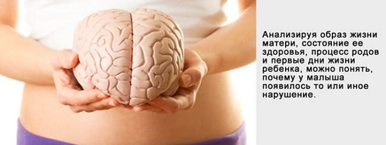
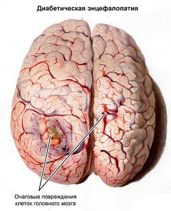
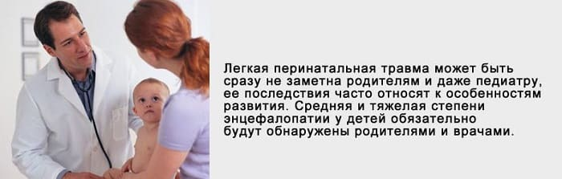
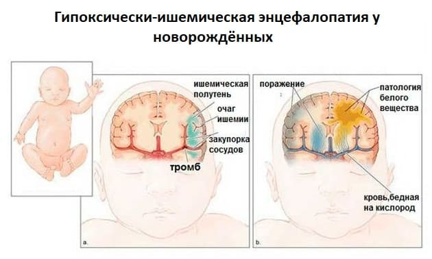

Сложное словосочетание «перинатальная энцефалопатия» встречается в лексиконе детских врачей, а следовательно, и родителей удивительно часто. По крайней мере, у половины читателей, заглянувших в амбулаторную карточку своего ребенка, есть реальные шансы обнаружить там знаменитую аббревиатуру ПЭП – что, собственно, и расшифровывается как перинатальная энцефалопатия.
Перевод на русский язык этого медицинского термина не очень прост. Но мы попробуем.
«Пери-» – (греч. peri-) приставка, означающая «расположение вокруг, снаружи, при чем-либо». «Натальный» – от лат. natus – рождение. Несложно сделать вывод, что суть понятия «перинатальный» – связанный с родами, имеющий место до, во время, после родов, есть даже такое словосочетание – «перинатальный период» и наука «перинатология». Имеет, по-видимому, смысл сразу же уточнить, что перинатология называет перинатальным периодом интервал, начиная с 28-й недели внутриутробной жизни плода и заканчивая седьмым днем после рождения.
Слово «патия-», происходящее от греческого pathos-, переводится как «болезнь», «страдание». Также греческое enkefalos – головной мозг. Ну а вместе получается «энцефалопатия» – болезнь мозга.

Болезнь мозга – понятие неконкретное, неудивительно, что и энцефалопатия – не конкретная болезнь, а термин, объединяющий целый ряд самых разнообразных болезней головного мозга. Становится очевидным, что диагностировать, лечить и вылечить энцефалопатию нельзя в принципе, ибо как можно лечить неконкретное понятие.
Отсюда следует, что если уж термин «энцефалопатия» произнесен, то надобно добавлять и другие пояснительные слова. Так обычно и поступают – для уточнения имени болезни к слову «энцефалопатия» добавляется соответствующее прилагательное, указывающее на причинный фактор, вызвавший болезнь (повреждение) мозга.
Например, билирубиновая энцефалопатия (поражение мозга, связанное с высоким уровнем билирубина), гипоксическая энцефалопатия (поражение мозга, связанное с дефицитом кислорода), ишемическая энцефалопатия (поражение мозга, связанное с нарушением мозгового кровообращения). Вполне понятны и не нуждаются в подробных объяснениях такие словосочетания, как диабетическая энцефалопатия, травматическая энцефалопатия, алкогольная энцефалопатия.

Несомненно, что без уточняющего прилагательного слово «энцефалопатия» не имеет никакого смысла и означает примерно следующее: «с мозгами что-то не так». И в этом аспекте слово «перинатальный» выглядит по меньшей мере странно, ибо никоим образом не уточняет природу повреждения головного мозга. Этот термин всего лишь указывает на временной интервал, когда эти изменения произошли.
Вот и получается, что словосочетание «перинатальная энцефалопатия» вразумительно перевести на русский язык просто невозможно – ну, ориентировочно, «с мозгами что-то не так из-за повреждения перед родами, во время или непосредственно после родов». Что не так? Да кто его знает…
С учетом приведенной информации читатели, пожалуй, и не удивятся тому факту, что диагноз «перинатальная энцефалопатия» отсутствует в международной классификации болезней и не используется нигде в мире, за исключением, разумеется, стран СНГ.
Назвать болезнь конкретным именем или пусть и завуалированно, но сказать «с мозгами что-то не так» – принципиально разные вещи.
Нервная система ребенка вообще и головной мозг в частности развиваются очень быстро. В процессе развития эпизодически возникают всякие непонятности, появляются, исчезают и угасают рефлексы, стремительно меняются реакции на окружающую среду, совершенствуются органы чувств, значительные изменения претерпевает объем движений и т. д. и т. п. Медицинская наука изрядно потрудилась и постаралась все эти изменения систематизировать. Отсюда многочисленные труды с информацией о нормах, о том, что положено, а что нет, о том, что может быть, что допустимо, чего не может быть никогда. А поскольку анализируемых и подвергнутых учету факторов сотни, что-нибудь обязательно выйдет за рамки отведенных сроков и норм.
И тогда на повестку дня встанет вопрос о диагнозе…
А поставить диагноз, руководствуясь международной классификацией болезней, не удастся. Но ведь есть конкретные жалобы и проблемы: у нас подбородочек дрожит, мы плакали 30 минут без остановки, а вчера срыгнули целых четыре раза, а на прошлой неделе очень сильно дрыгали ногами и т. д.
Алгоритм взаимоотношений детского врача и родителей в рамках отечественной ментальности совершенно не предусматривает фразы типа «все нормально, оставьте дитя в покое» или «успокойтесь, перерастет». Стандартная процедура любого врачебно-родительского контакта начинается с вопроса «на что жалуетесь?» и заканчивается конкретным диагнозом. Ситуация, при которой родители всем довольны, – удивительная редкость. Врачебный осмотр, в ходе которого не будут обнаружены никакие отклонения от норм, сроков и стандартов, – явление уникальное. Сочетание редкого и уникального – это уже вне комментариев.
В то же время и жалобы, и выявленные в ходе осмотра ненормальности сплошь и рядом на диагноз, собственно говоря, не тянут. Ну не все замечательно, ну не так кое-что, ну не совсем так кое-где, но это ж не повод лечиться-спасаться-обследоваться… Но произнести, а тем более написать фразу «что-то не так» или «с мозгами что-то не так» – это ж окончательно и бесповоротно подорвать доверие к медицинской науке вообще и к конкретному врачу в частности.

И тут приходит на помощь замечательный диагноз – «перинатальная энцефалопатия». Диагноз чрезвычайно удобный в силу своей внешней учености и неопределенности.
Здесь есть еще один очень интересный нюанс. Конкретный неврологический диагноз – реальный повод для серьезного лечения, очень часто в условиях стационара. Отсюда отчетливая тенденция к тому, что чем ближе к больнице – тем больше ясности и определенности. Неудивительно в этой связи, что в роддомах, отделениях патологии новорожденных и детских неврологических стационарах диагноз «перинатальная энцефалопатия» не встречается практически никогда. Там, где есть повод серьезно лечить, нельзя без серьезного и осмысленного диагноза.
Проиллюстрируем это следующими примерами.
Наиболее распространенный вариант энцефалопатии у детей раннего возраста – так называемая гипоксически-ишемическая энцефалопатия – повреждение мозга из-за нехватки кислорода и нарушений мозгового кровообращения в перинатальном периоде. А теперь цифры: по данным авторитетных зарубежных медиков и отечественного учебника «Основы перинатологии», гипоксически-ишемическая энцефалопатия (ГИЭ) встречается у доношенных новорожденных с частотой 1,8–8 случаев на 1000 детей, т. е. 0,18–0,8 %.
По тем же данным, на долю ГИЭ приходится примерно половина всех перинатальных повреждений нервной системы.
Здесь имеется в виду следующее. Среди выявляемых в перинатальном периоде болезней нервной системы выделяют: уже упомянутую нами гипоксически-ишемическую энцефалопатию; родовые травмы, инфекции, врожденные аномалии и нарушения обмена веществ. Так вот, примерно половина – это ГИЭ, вторая половина – все остальное.

Несложно посчитать, что если на долю ГИЭ приходится 0,8 %, то все вместе – 1,6 %, максимум 2 %. Приведенные цифры относятся к доношенным детям. У недоношенных, а их около 10 %, поражения нервной системы встречаются намного чаще, так что итоговую цифру можем смело увеличить еще в 2 раза.
Подведем итог всей этой арифметики. Конкретный диагноз перинатального поражения нервной системы может быть установлен у 4 % детей, в то же время перинатальная энцефалопатия выявляется в детских поликлиниках нашей страны у 50 % детей, а в некоторых лечебных учреждениях эта цифра достигает 70 %!!!
Еще раз прошу вдуматься в эти фантастические цифры: конкретные, требующие лечения болезни нервной системы имеют место максимум у 4 % детей, но каждая вторая мама отправляется в аптеку за лекарствами «для мозгов».
Именно эти походы в аптеку представляют собой важнейшее звено в рассматриваемой теме. Ведь что получается: половина детей имеют диагноз «у вас с мозгами что-то не так», что в переводе с русского языка на медицинский звучит как «перинатальная энцефалопатия». Казалось бы, ну и что тут такого страшного? Ну поговорили, написали, разошлись по домам в конце концов! Но ведь так не получается, ибо как из жалобы вытекает диагноз, так из диагноза вытекает лечение. Ибо, коль уж сказано «А» (перинатальная энцефалопатия), так приходится говорить «Б» (– попейте эти таблеточки). А если вышеупомянутое «Б» не сказать, так это значит быть равнодушным и невнимательным. Как же можно ничего не делать, если такой страшный диагноз!!!
Лечение перинатальных поражений нервной системы лекарствами – это вообще отдельная тема. Дело в том, что после воздействия на мозг ребенка повреждающего фактора (травма, кислородное голодание и т. д.) начинается острый период энцефалопатии, который длится 3–4 недели. Именно в остром периоде необходима активная лекарственная терапия, которая способна серьезным образом повлиять на исход болезни. Далее следует восстановительный период, когда эффективность фармакологических средств очень невелика и акцент делается на принципиально другие методы помощи – массаж, физиопроцедуры и т. п.
Несложно заключить, что визиты в детскую поликлинику никогда не происходят в остром периоде болезни, так что даже при серьезных неврологических проблемах лечение лекарствами в большинстве случаев не нужно и бесперспективно. Что уж говорить про болезни несерьезные или про не болезни в принципе…
И в этом аспекте неопределенное, умно-ученое, но ничего не требующее и ни к чему не обязывающее понятие «перинатальная энцефалопатия» представляет собой конкретное зло. Именно зло, поскольку сплошь и рядом инициирует действия и явления совершенно ненужные, иногда опасные – эксперименты с лекарствами, ограничения нормального образа жизни, хождения по медицинским учреждениям, материальные потери, эмоциональные стрессы.
Искоренить это зло практически невозможно. Можно лишь изменить к нему отношение. Изменить отношение и понять самое-самое главное: перинатальная энцефалопатия – это не повод спасаться и грустить. Ведь если у вашего малыша обнаружили перинатальную энцефалопатию, так это значит, что нет у него серьезных, конкретных и опасных болезней. Это временно, это мелочи, это само пройдет, образуется, перерастется.
И это повод улыбнуться и потерпеть.
Е.О.Комаровский. "Здоровье ребенка"